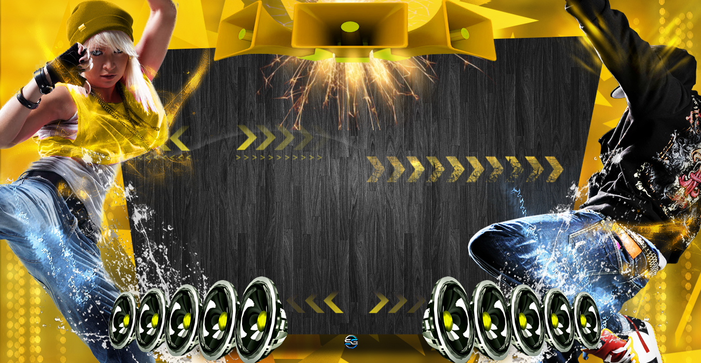
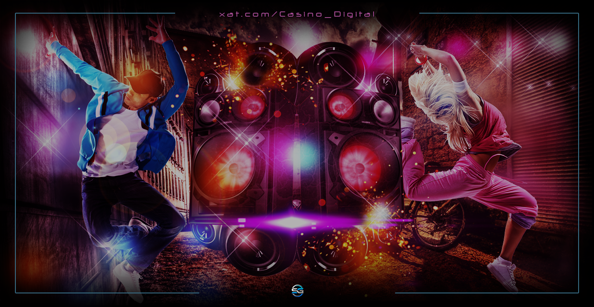

Ajustes
Multimedia
Música
Video
Juegos
Configuración
Ajustes del sistema y preferencias generales
Ajustes del sistema y preferencias generales
Local
Reproducir desde playlist local
Reproducir desde playlist local
Radio
Reproducir desde streaming en vivo
Reproducir desde streaming en vivo
Play
Iniciar reproducción local
Iniciar reproducción local
Pause
Detener reproducción local
Detener reproducción local
Shuffle
Reproducción aleatoria
Reproducción aleatoria
Repeat
Repetir pista actual
Repetir pista actual
Toda La Música
Explora todas las playlists disponibles
Explora todas las playlists disponibles
Hits
Lo más popular del momento
Lo más popular del momento
Regional Mexicano
Cultura, raíces y fuerza sonora
Cultura, raíces y fuerza sonora
Viva Latino
Ritmos latinos que encienden
Ritmos latinos que encienden
Rock en Español
Clásicos y nuevas distorsiones
Clásicos y nuevas distorsiones
Mega Mix
Fusión de géneros y energía
Fusión de géneros y energía
After Party
Lo que suena después del caos
Lo que suena después del caos
Pop Electrónico
Sintetizadores y melodías modernas
Sintetizadores y melodías modernas
Baladas
Emoción pura en cada nota
Emoción pura en cada nota
Essentials
Selección esencial para cualquier momento
Selección esencial para cualquier momento
Temas
Tema 1
Fondo clásico
Fondo clásico
Tema 2
Fondo neón
Fondo neón

Tema 3
Fondo glitch
Fondo glitch
Tema 4
Fondo retro
Fondo retro

Tema 5
Fondo oscuro
Fondo oscuro

Restaurar fondo
Volver a Background Classic
Volver a Background Classic
Skins
Skin 1
Blanco sobre negro
Blanco sobre negro
Skin 2
Neón violeta
Neón violeta
Skin 3
Azul eléctrico
Azul eléctrico
Skin 4
Verde ácido
Verde ácido
Skin 5
Rojo ritual
Rojo ritual
Cargando fecha y hora...
Cargando metadatos...
Santi Graphics